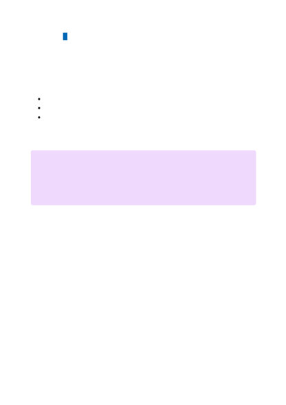

Cognitive Services resource owners can manage consent requests and the private
endpoints, through the 'Private endpoints' tab for the Cognitive Services resource in the
When creating the private endpoint, you must specify the Cognitive Services resource it
connects to. For more information on creating a private endpoint, see:
Create a private endpoint using the Private Link Center in the Azure portal
Create a private endpoint using Azure CLI
Create a private endpoint using Azure PowerShell
Clients on a VNet using the private endpoint should use the same connection string for
the Cognitive Services resource as clients connecting to the public endpoint. The
exception is the Speech Services, which require a separate endpoint. See the section on
Private endpoints with the Speech Services. We rely upon DNS resolution to
automatically route the connections from the VNet to the Cognitive Services resource
over a private link.
We create a private DNS zone attached to the VNet with the necessary updates for the
private endpoints, by default. However, if you're using your own DNS server, you may
need to make additional changes to your DNS configuration. The section on DNS
changes below describes the updates required for private endpoints.
See Using Speech Services with private endpoints provided by Azure Private Link.
Private endpoints
Connecting to private endpoints
７
Note
Azure OpenAI Service uses a different private DNS zone and public DNS zone
forwarder than other Azure Cognitive Services. Refer to the Azure services DNS
zone configuration article for the correct zone and forwader names.
Private endpoints with the Speech Services
DNS changes for private endpoints